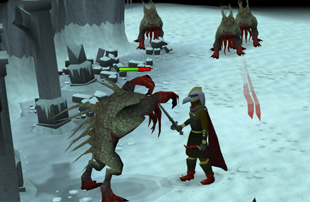
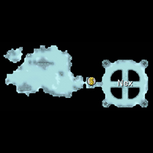
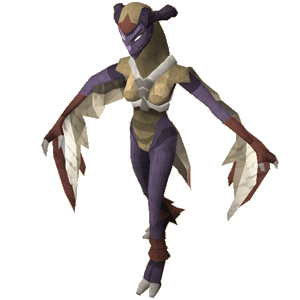
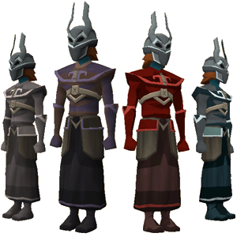
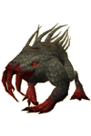
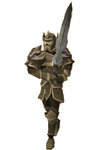
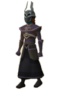
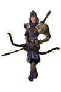

")
Ancient Prison (Members)
Warning
You should be sure to read the God Wars Dungeon - Introduction before even contemplating visiting the Ancient Prison.
Like the rest of the God Wars Dungeon, the Ancient Prison is a terribly dangerous place. Please only bring equipment that you're not awfully attached to.
Introduction

The god in whose name they fight has been lost to time for almost as long as the army itself, though it is known to a select few historians and adventurers, and a small pocket of surviving followers on the surface who keep themselves hidden so as not to befall the same fate as what befell those in the Ancient Prison...or worse.
Points of Interest

As with the strongholds of the four other factions above, you will then need to defeat 40 soldiers of this army to progress through to the boss room. Between the boss room and prison you'll find a safe area, residing in which is the nature spirit Ashuelot Reis. She is on guard here, atoning for some past sin; she'd be more than happy to talk to you about the Ancient Prison and its inhabitants, as well as offer you access to your bank.
And you're going to need bank access to stock up on items before heading down the slope to face the leader of this army: Nex. Heading down the slope is a one-way trip (you'll have to teleport to exit Nex's room).
Personalities

Nex
Nex
Many words could be used to describe the force of nature that is Nex - graceful, vicious, quick, cruel, efficient, deadly. The only word that truly describes her, though, is Nex, for she is an entity unto herself, incomparable, without equal...oblivion personified. No wonder, then, that the other gods' armies banded together to smite Nex, and yet they could only imprison her. Thankfully, Nex's imprisonment has dulled her full power, so if you ever have to face her, you might well survive (for a few seconds, at least). Weakened as Nex is, she's still likely the most formidable foe you will face on RuneScape.
What exactly Nex is has been lost to time long before even the god wars began. Some would call her demon, blood-drinker, vile beast; others would call her angel, perfection, power. Physically, she appears to share traits with icyene, vampyres, aviansie and demons; Nex is none yet all of these things.

Fumus, Umbra, Cruor and Glacies
Fumus, Umbra, Cruor and Glacies
These four mages are the faithful servants of Nex, each a master of one of the four ancient elements. Fumus, breather of smoke; Umbra, caster of shadow; Cruor, drinker of blood; and Glacies, master of ice. Each has become so attuned with their magical element that they have all but become that element, though their true appearances are masked by their robes and masks.
Nex protects these servants, for they in turn attune Nex to their element, granting her abilities that make her even more formidable. If one were able to somehow get rid of these ancient mage cohorts, it would help to weaken Nex further, to the point where you might even stand a chance of defeating her.
Quests
There are no quest starts in the Ancient Prison.
Inmates of the Ice
|

Where blood reavers originate from is anyone's guess, but they appear to be a distant cousin of the bloodvelds of Morytania, albeit uglier, tougher, nastier and less friendly. They are seemingly pack hunters, using their magic to soften up prey.
|

These warriors were the elite melee fighters of this ancient army. Their scary-looking armour is your first hint not to mess with them; ignore it and discover the second hint - the sharp edge of their wicked two-handed swords.
|
|

Learned in the ways of ancient magicks as they are, these wizards are incredibly powerful enemies. They have the ability to call upon the ancient elements of smoke, shadow, blood and ice, but mostly favour just beating you.
|

During this army's downfall at the hands of the other gods, ranged warfare became even more important to keep their enemies at bay. Though the army was still eventually defeated, it would be wise not to underestimate their archers.
|
Miscellaneous
- If you don't have one to hand, the corpse behind the frozen door has a spare rope for you to use to descend down into the Ancient Prison.
- The frozen key has five charges on it, with a charge being used up each time the frozen door is accessed. If you use its final charge, the key will be destroyed and you'll have to collect together its four parts again. This can be avoided, however, by taking your used key either to Bob in Lumbridge or to a repair stand in your POH, where it can be renewed at the cost of 50,000 coins per charge.
- The inscription on the plaque behind Ashuelot is not without meaning - heed its words!

|
More articles in God Wars Dungeon (Members)
|
|